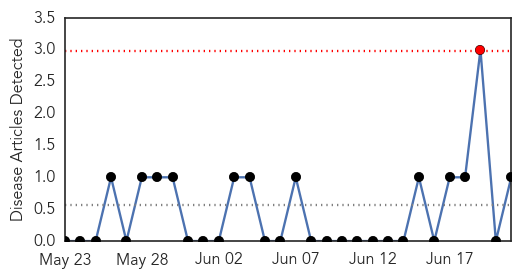
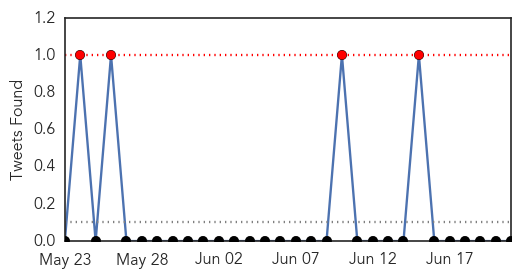
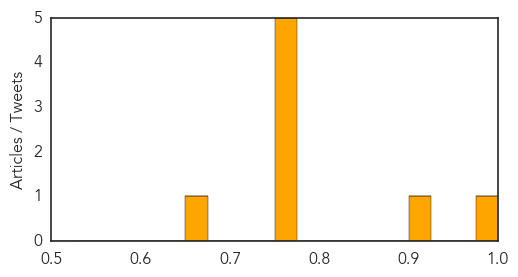

Mold/Fungal
30-Day Web Trend
1 alerts, 0 warnings

30-Day Twitter Trend
0 alerts, 0 warnings

Article Locations
Article Confidences

Top Articles:
Top Tweets:
-
No tweets found for Jun 21, 2015
Influenza
30-Day Web Trend
0 alerts, 0 warnings
30-Day Twitter Trend
1 alerts, 0 warnings

Article Locations
Article Confidences
Top Articles:
- 0.994
- Travel warning stays for now despite eased Mers fear in South Korea
- 0.920
- Times Of Oman :: Oman Air urges Thailand-bound passengers to get tested after MERS threat
- 0.751
- June 21, 2015 Archives
- 0.751
- June 20, 2015 Archives
- 0.751
- June 20, 2015 Archives
- 0.751
- June 20, 2015 Archives
- 0.751
- June 20, 2015 Archives
- 0.662
- Ban will keep poultry exhibits from area fairs
Top Tweets:
-
No tweets found for Jun 21, 2015